↔
摺線精準、左右對稱
機鼻、翼根與翼尖都要對齊。微小的不對稱會造成轉彎甚至翻滾。
- 先壓出中心線
- 每一步都對齊邊緣
- 完成後從機頭正視檢查

FLIGHT 101
紙飛機沒有引擎，離手後主要靠初始速度與重力分量向前滑翔；四力會隨速度、角度與姿態持續改變。
紙飛機的「升力」不是單一原因造成。機翼迎角、氣流偏轉、上下表面的壓力差與渦流都可能參與；教學時可先從「空氣對機翼的合力」理解，再逐步深化。
FOLD • TRIM • THROW
摺得準、調得細、投得穩，比單純「用力丟」更重要。
機鼻、翼根與翼尖都要對齊。微小的不對稱會造成轉彎甚至翻滾。
重心略靠前通常較穩定；兩翼微微上翹形成淺 V 字，可提升橫向穩定。
滑翔型紙飛機適合輕柔、近水平出手；尖頭型才適合較快但仍平順的投擲。
VIRTUAL WIND TUNNEL
拖曳三個控制項，先提出預測，再拿真實紙飛機驗證。模擬結果是探究提示，不是精密工程計算。
公平測試原則：固定紙張、投擲者、起點與環境；一次只改一個變因，每個條件至少試飛 3～5 次並取平均。
FLIGHT DOCTOR
機頭太重、投擲角度太低，或升降舵向下。
把機翼後緣微微向上折；改用水平、較輕柔的投擲。
一次只調整一處，再試飛比較，才能知道是哪個改變真正有效。
CLASSROOM PLAN
可拆成兩節課，也能延伸成科展前導活動。
比較兩架不同設計的紙飛機，讓學生預測誰飛得遠、為什麼。
用箭頭標示升力、重力、推力與阻力，說明滑翔時力量會變動。
每組選擇一種基本摺法，先設定想優化的目標：距離或滯空。
每個條件飛 3～5 次，量距離或計時，記錄平均與異常值。
用數據說明哪個設計較好，提出下一輪只改一項的方案。
CURATED RESOURCES
優先收錄官方、博物館、工程教育與科學教育資源；外部網站可能改版，使用前請再次確認授權與下載方式。
提供多款紙飛機圖樣、飛行基礎與適合學生操作的航空入門內容。
前往網站 ↗透過移動迴紋針與改變機翼形狀，觀察空氣動力與飛行表現的改變。
前往網站 ↗完整 STEM 探究活動，以公平測試比較摺痕、襟翼與阻力對飛行距離的影響。
前往網站 ↗免費工程設計活動與學習單，適合把紙飛機發展成一堂設計挑戰課。
前往網站 ↗用紙製作環形翼滑翔機，練習控制變因、測試原型與工程改良。
前往網站 ↗集合紙飛機摺法、難度、飛行特性與課堂教案，適合學生自主選型。
前往網站 ↗華文科學教育文章，以簡易實驗連結升力、速度、形狀與角度。
前往網站 ↗臺灣教師的飛行科學課程案例，強調平衡、對稱、重心與做中學。
前往網站 ↗國小課程實例，從四力、紙飛機設計到試飛競賽與設計思考。
前往網站 ↗臺灣紙飛機科學營報導，呈現摺法、飛行原理與多種趣味飛行方式。
前往網站 ↗最好的紙飛機，不一定是第一次摺好的那一架。